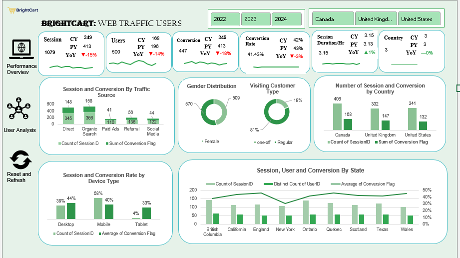

📌Project Overview
This project analyzes website traffic patterns for an online retail business to improve marketing timing,
channel performance, and conversion outcomes. Using Excel, the analysis explores how user engagement varies
by time of day, day of the week, and marketing channels such as organic search, paid ads, social media,
and email campaigns.

Excel dashboard showing hourly traffic trends and channel performance.
📊Business Context
Online retail platforms often experience fluctuating traffic throughout the day and across different
marketing channels. Without clear visibility into these patterns, it becomes difficult to time promotions,
optimize campaigns, or understand which channels deliver the strongest results. This project provides
structured insights to support smarter, data‑driven decision‑making.
🎯Project Purpose
- Understand user behavior across time and marketing channels
- Improve marketing efficiency by aligning campaigns with peak engagement periods
- Strengthen conversion rates through better timing and channel optimization
- Build a data-driven foundation for ongoing performance improvements
🚀Expected Outcomes
- Improved conversion rates through better promotional timing
- Optimized marketing spend focused on high-performing channels
- Clear visibility into customer behavior patterns
- Data-backed recommendations for marketing and operations
- Enhanced ROI and reduced wasted impressions
⚠️Key Challenges Addressed
- Uncertainty around peak and low-traffic periods
- Limited visibility into channel effectiveness
- Difficulty correlating traffic timing with conversion outcomes
- Insufficient insights into customer behavior across demographics and locations
🛠️Tools & Methods
Primary Tool: Microsoft Excel
- Data collection from analytics sources
- Data cleaning and timestamp standardization
- Exploratory analysis of traffic patterns
- Visualization of traffic and conversion trends
- Segmentation by channel, device, and geography
- Actionable recommendations for marketing optimization
📁Deliverables
- Interactive Excel dashboards